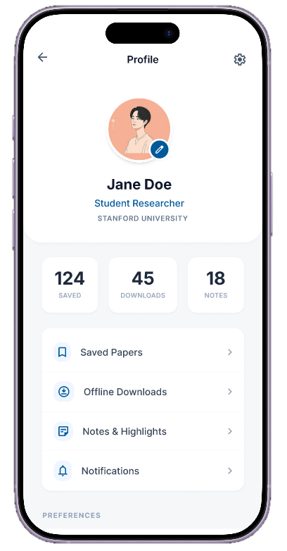
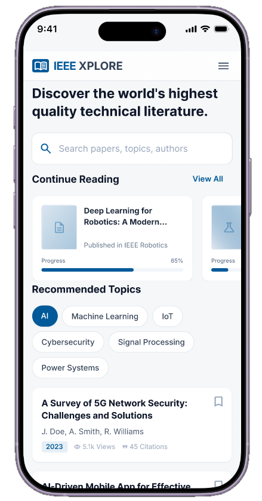

Featured design case study
From Papersto Pocket
Redesigning IEEE Xplore as a mobile-first research companion.
Concept project, designed in Figma with Stitch AI

Overview
A research platform built for the desktop, rethought for the phone.
The redesigned IEEE Xplore mobile application provides a streamlined, research-focused interface that supports the complete academic workflow, from account access to paper reading and management. The design follows a mobile-first approach, emphasising clarity, accessibility, and efficient navigation for students and researchers using smartphones.
IEEE Xplore is a large platform for discovering papers, journals, conference proceedings, and technical standards across engineering and computer science. Its advanced search, filters, and citation tools are designed mainly for desktop use.
The problem
The current experience does not translate well to mobile. Researchers cannot easily browse, read, or manage papers on a small screen, which limits how much they can get done away from a desk.
Advanced search and filters built for a large screen feel cramped on a phone.
Returning to saved papers while on the move is difficult.
Annotating while reading is not comfortable on mobile.
Tracking relevant new research on the go takes too many steps.
How might weMake academic research accessible, interactive, and personal on a phone, without losing the depth and credibility of the content?
The proposed system
A mobile-first redesign of IEEE Xplore that restructures the desktop-oriented experience into a workflow-driven mobile app, optimised for academic research on the go.
What it lets researchers do
- Create an account and log in securely to reach personalised research content
- Search academic papers quickly through one mobile search interface
- Browse research domains with categorised topic filters
- Resume previously opened papers with Continue Reading
- Read in a distraction-free interface made for mobile screens
- Listen to a paper using the audio button
- Bookmark, download, and manage papers for offline or later access
- Organise research through saved papers, notes, highlights, and reading history
- Customise reading with dark mode, font size, and alerts
One journey, not a whole ecosystem
The existing system spreads attention across many features of the wider IEEE ecosystem. The proposed solution focuses on the researcher's main mobile journey:
This workflow-centred approach improves accessibility, supports mobile usability, and helps researchers work with academic content anytime and anywhere.
Process
I worked in three stages, from understanding the problem to a final interface.
Understanding how researchers search, read, and keep track of papers, and where the desktop experience breaks down on a phone. [What you looked at and what you found.]
Shaping the journey from login through reading and saving to managing a personal library.
Designing the screens in Figma, with Stitch AI to explore ideas faster. [Your palette and typeface, and what you refined by hand.]
The user flow
The main journey runs from login to a personal library. Dashed lines show shortcuts and returns.
Key features
Simple sign-up and login with minimal input fields and clear calls to action.
One prominent search bar at the top of the home screen.
Categorised chips for quick filtering by research domain.
Resume previously opened papers, with progress shown.
Title, authors, year, views, citations, and a bookmark, easy to scan.
Notes, reading history, settings, help, and profile without cluttering the main screen.
Bookmark, download, adjust reading preferences, or listen with the audio button.
Saved papers, offline downloads, highlights, and preferences like dark mode, font size, and alerts.
Tools and AI
I used two tools: Figma for the design work, and Stitch AI to explore ideas faster.
Used to create and refine the final screen layouts, establish visual consistency, and develop the polished interface.
Used to explore initial layout ideas, understand possible screen structures, and generate design references that guided subsequent refinements in Figma.
How I worked with AIAI sped up exploration. The design judgement stayed with me: choosing what suited researchers, fixing what did not, and keeping the interface consistent and credible.
Outcome
Overall, the design improves usability, reduces navigation complexity, and creates a structured mobile research experience that supports discovering, reading, and organising academic literature.
The ideaDesktop depth + mobile convenience = research that fits in your pocket.
What I learned
Mobile is not a smaller desktop. It needs different priorities, especially for dense and credible content. Working with an AI design tool also taught me to treat its output as a starting point to question and refine, not a finished answer.